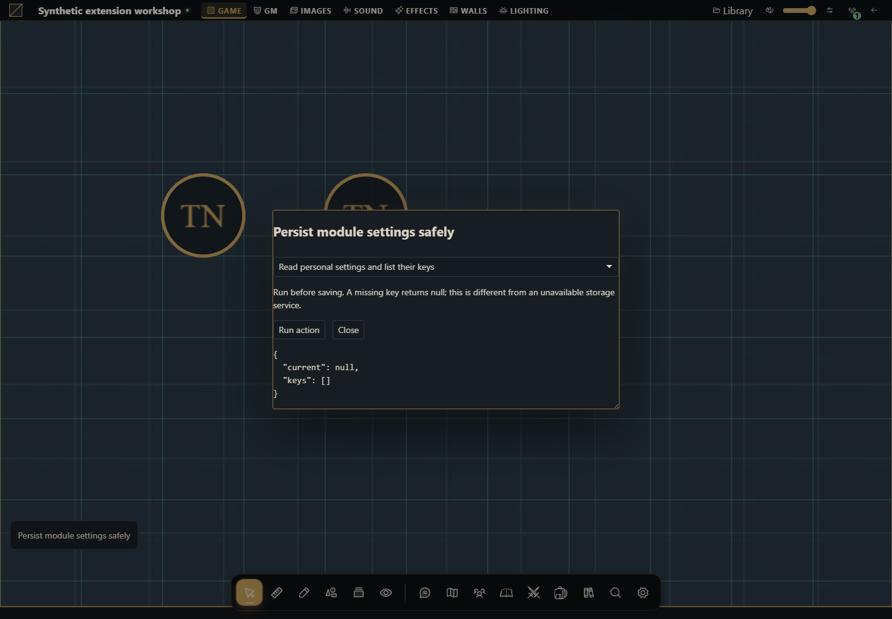

Salvar configurações e preferências do módulo
Implementar JSON pessoal, compartilhado e local com revisões e descarte.


O projeto que você vai criar
Crie um laboratório de configurações. As ações mostram o ciclo completo de uma chave em cada escopo, com leitura, gravação, listagem e exclusão. Use esses elementos em preferences ou customize para montar seu formulário real.
Host alvo: Gravewright 0.3.0. As ações rodam somente quando você clica Run action; leituras e escritas usam a conta conectada. O painel de demonstração está em inglês. Cada receita abaixo informa os dados de entrada e o resultado concreto.
1. Crie os arquivos
Crie uma pasta module-settings. Salve os arquivos mostrados abaixo em UTF-8, ou baixe o projeto completo. manifest.json fica na raiz. Não há dependências npm nem build de JavaScript.
module-settings/
manifest.json
main.mjs
recipes.mjs
styles.css
LICENSE.txt2. Empacote, instale e ative
Partindo da pasta do projeto, execute no PowerShell:
python -m json.tool manifest.json
python -m zipfile -c ../module-settings-1.0.0.zip manifest.json main.mjs recipes.mjs styles.css LICENSE.txt
python -m zipfile -l ../module-settings-1.0.0.zipNo Linux/macOS, substitua python por python3 no mesmo comando. A listagem precisa mostrar manifest.json na raiz. Como proprietário, abra Inside → Módulos → Instalar módulo → Instalar de ZIP, selecione o ZIP e clique Instalar. Como GM, abra a campanha, use o botão Gravewright da mesa → Extensions e clique Activate na versão 1.0.0 de Persist module settings safely. Feche o menu e clique no botão Persist module settings safely. Se precisar de detalhes de cada tela, veja seu primeiro módulo.
O projeto fica inativo até a seleção na mesa. Teste uma extensão de demonstração por vez, pois seus botões usam a mesma posição. Para novos bytes, mude version para 1.0.1, gere outro ZIP, instale e ative essa versão; não edite o pacote instalado.
3. Execute cada receita
Ler preferências pessoais e listar chaves
Execute antes de salvar. Chave ausente retorna null; isso não é falha de armazenamento.
async ({storage}) => {
return {current:await storage.user.get('workshop.preferences'),keys:await storage.user.list('workshop.')};
}Resultado esperado: null no primeiro uso e lista de chaves/revisões.
Como conferir: Repita em outra conta ou campanha; armazenamento pessoal do servidor é separado.
Salvar preferência pessoal versionada com CAS
Escolha o rótulo. A leitura fornece expectedRevision; alteração concorrente gera conflict. Não substitua a revisão para repetir automaticamente.
async ({storage},v) => {
const current=await storage.user.get('workshop.preferences');
if(current && current.value?.schema!==1) throw new Error('Unsupported settings schema; migrate explicitly');
return storage.user.set('workshop.preferences',{schema:1,label:v.label},{expectedRevision:current?.revision??null});
}Resultado esperado: Valor e nova revisão opaca, preservados ao desativar.
Como conferir: Leia novamente, desative/ative e compare. Faça duas leituras antes de duas gravações; a segunda desatualizada deve falhar.
Apagar apenas a preferência deste tutorial
A exclusão usa a revisão atual de uma chave exata. Nenhuma preferência de outro módulo/campanha é removida.
async ({storage}) => {
const current=await storage.user.get('workshop.preferences');
if(current) await storage.user.delete('workshop.preferences',{expectedRevision:current.revision});
return storage.user.get('workshop.preferences');
}Resultado esperado: null.
Como conferir: Leia e liste novamente; a chave do tutorial desapareceu.
Compartilhar uma configuração do GM com a mesa
GM grava; jogadores seguem o ramo de leitura. É JSON compartilhado do módulo, sem autorizar alterações de documentos.
async ({api,storage,signal},v) => {
if(!(await api.actors.state({}, {signal})).is_gm) return {readOnly:true,current:await storage.table.get('workshop.shared')};
const current=await storage.table.get('workshop.shared');
const saved=await storage.table.set('workshop.shared',{schema:1,label:v.label},{expectedRevision:current?.revision??null});
return {saved,keys:await storage.table.list('workshop.')};
}Resultado esperado: GM recebe a revisão; jogador recebe o mesmo valor compartilhado.
Como conferir: Use duas contas na mesma campanha. storage.table.set direto de jogador deve ser recusado no servidor.
Remover a chave compartilhada do tutorial
Execute como GM depois de conferir o valor compartilhado.
async ({storage}) => {
const current=await storage.table.get('workshop.shared');
if(current)await storage.table.delete('workshop.shared',{expectedRevision:current.revision});
return storage.table.get('workshop.shared');
}Resultado esperado: null; jogador não pode apagar esta chave.
Como conferir: Leia como jogador depois da exclusão pelo GM.
Usar configuração local do navegador e limpá-la
Guarde apenas escolha de interface aqui. O namespace é módulo+origem e é compartilhado entre contas e mesas no navegador.
async ({storage},v) => {
await storage.local.set('workshop.local',{schema:1,density:v.density});
const value=await storage.local.get('workshop.local');
await storage.local.delete('workshop.local');
return {observed:value,afterDelete:await storage.local.get('workshop.local')};
}Resultado esperado: observed contém a escolha e afterDelete é null. Armazenamento local não usa revisão CAS.
Como conferir: Não armazene notas privadas, permissões ou segredos da conta neste namespace.
4. Entenda e adapte os arquivos completos
main.mjs desenha apenas o lançador e o formulário. recipes.mjs contém as ações: para adaptar o comportamento, altere a função run da receita desejada, mantendo sua assinatura. O formulário passa tipos reais (number, boolean e File), bloqueia requisições simultâneas e desenha resultados com textContent. Não há avaliação de código fornecido pelo usuário. api, host, assets e storage pertencem à montagem; signal cancela trabalho ao desativar. O modal não fecha durante uma operação pendente e é liberado ao abortar a montagem. A função de negócio continua responsável por revisões, permissões e sequência transacional.
manifest.json
{
"id": "tutorial.module-settings",
"name": "Persist module settings safely",
"version": "1.0.0",
"sdk": {
"requires": ">=1.0.0 <2.0.0",
"tested": "1.0.0"
},
"entry": "main.mjs",
"description": "Implement personal, shared and browser-local JSON with revisions and cleanup.",
"author": "Gravewright documentation",
"license": "MIT"
}main.mjs
import {recipes} from './recipes.mjs';
export default {
start({styles}) { styles.use('styles.css'); },
register({register}) {
register("table.interface", ({root,api,host,assets,storage,context,events,viewport,signal,onDispose}) => {
const doc=root.ownerDocument;
const button=doc.createElement('button');
button.type='button';button.className='tutorial-launcher';
button.textContent="Persist module settings safely";
root.append(button);
for(const type of ['pointerdown','mousedown'])button.addEventListener(type,event=>event.stopPropagation(),{signal});
let modal,pending=false;
button.addEventListener('click',event=>{
event.stopPropagation();
if(modal?.isConnected) { modal.focus();return; }
const panel=doc.createElement('section');
panel.className="tutorial-workbench-module-settings";
panel.setAttribute('role','dialog');panel.setAttribute('aria-modal','true');
panel.setAttribute('aria-label',button.textContent);panel.tabIndex=-1;
const title=doc.createElement('h2');title.textContent=button.textContent;panel.append(title);
const choose=doc.createElement('select');choose.setAttribute('aria-label','Action');
for(const recipe of recipes) {
const option=doc.createElement('option');option.value=recipe.id;option.textContent=recipe.label;choose.append(option);
}
const form=doc.createElement('form'),fields=doc.createElement('div');
const description=doc.createElement('p');
const run=doc.createElement('button');run.type='submit';run.textContent='Run action';
const close=doc.createElement('button');close.type='button';close.textContent='Close';
const output=doc.createElement('pre');output.setAttribute('role','status');output.setAttribute('aria-live','polite');
form.append(description,fields,run,close,output);panel.append(choose,form);
function renderFields(){
const recipe=recipes.find(item=>item.id===choose.value);fields.replaceChildren();
description.textContent=recipe.description;
for(const field of recipe.fields||[]) {
const label=doc.createElement('label');label.textContent=field.label;
const input=doc.createElement('input');input.name=field.name;input.type=field.type||'text';
if(field.type==='number')input.step=String(field.step??'any');
if(field.type==='checkbox')input.checked=!!field.value;
else if(field.type!=='file')input.value=String(field.value??'');
input.required=!!field.required;
if(field.accept)input.accept=field.accept;
label.append(input);fields.append(label);
}
output.textContent='';
}
choose.addEventListener('change',renderFields,{signal});renderFields();
form.addEventListener('submit',async event=>{
event.preventDefault();if(pending)return;
const recipe=recipes.find(item=>item.id===choose.value),values={};
for(const input of fields.querySelectorAll('input')) {
values[input.name]=input.type==='file'?input.files[0]:input.type==='checkbox'?input.checked:input.type==='number'?Number(input.value):input.value;
}
pending=true;choose.disabled=true;run.disabled=true;close.disabled=true;
for(const input of fields.querySelectorAll('input'))input.disabled=true;
output.textContent='Running…';
try {
const value=await recipe.run({api,host,assets,storage,context,events,viewport,signal,onDispose},values);
if(!signal.aborted)output.textContent=typeof value==='string'?value:JSON.stringify(value??null,null,2);
} catch(error) {
if(!signal.aborted)output.textContent=String(error.code||error.message||'unavailable');
} finally {
pending=false;
if(!signal.aborted){choose.disabled=false;run.disabled=false;close.disabled=false;for(const input of fields.querySelectorAll('input'))input.disabled=false;}
}
},{signal});
close.addEventListener('click',()=>void modal.close(),{signal});
modal=api.ui.openModal(panel,{canClose:()=>!pending||signal.aborted});
},{signal});
onDispose(()=>{button.remove();if(modal)void modal.close();});
});
},
stop() {}
};recipes.mjs
export const recipes=[
{
id:"user-read",
label:"Read personal settings and list their keys",
description:"Run before saving. A missing key returns null; this is different from an unavailable storage service.",
fields:[],
run:async ({storage}) => {
return {current:await storage.user.get('workshop.preferences'),keys:await storage.user.list('workshop.')};
}
},
{
id:"user-set",
label:"Save a versioned personal setting with CAS",
description:"Choose a label. Read supplies the expected revision; a concurrent edit causes conflict. Do not replace that revision and retry automatically.",
fields:[
{
"name": "label",
"label": "Panel label",
"value": "My campaign notes",
"type": "text",
"required": true
}
],
run:async ({storage},v) => {
const current=await storage.user.get('workshop.preferences');
if(current && current.value?.schema!==1) throw new Error('Unsupported settings schema; migrate explicitly');
return storage.user.set('workshop.preferences',{schema:1,label:v.label},{expectedRevision:current?.revision??null});
}
},
{
id:"user-delete",
label:"Delete only this tutorial preference",
description:"Delete uses the latest revision of one exact key. No other module or campaign preference is removed.",
fields:[],
run:async ({storage}) => {
const current=await storage.user.get('workshop.preferences');
if(current) await storage.user.delete('workshop.preferences',{expectedRevision:current.revision});
return storage.user.get('workshop.preferences');
}
},
{
id:"table-store",
label:"Share one GM-authored setting with the table",
description:"GM writes; players take the read-only branch. This is shared module JSON, not permission to change unrelated documents.",
fields:[
{
"name": "label",
"label": "Shared label",
"value": "Workshop rules of courtesy",
"type": "text",
"required": true
}
],
run:async ({api,storage,signal},v) => {
if(!(await api.actors.state({}, {signal})).is_gm) return {readOnly:true,current:await storage.table.get('workshop.shared')};
const current=await storage.table.get('workshop.shared');
const saved=await storage.table.set('workshop.shared',{schema:1,label:v.label},{expectedRevision:current?.revision??null});
return {saved,keys:await storage.table.list('workshop.')};
}
},
{
id:"table-delete",
label:"Remove the shared tutorial key",
description:"Run as GM after testing the shared value.",
fields:[],
run:async ({storage}) => {
const current=await storage.table.get('workshop.shared');
if(current)await storage.table.delete('workshop.shared',{expectedRevision:current.revision});
return storage.table.get('workshop.shared');
}
},
{
id:"local",
label:"Use browser-local settings and clear them",
description:"Only UI choices belong here. This namespace is module+browser origin, shared across accounts and tables in that browser.",
fields:[
{
"name": "density",
"label": "Local density",
"value": "compact",
"type": "text",
"required": true
}
],
run:async ({storage},v) => {
await storage.local.set('workshop.local',{schema:1,density:v.density});
const value=await storage.local.get('workshop.local');
await storage.local.delete('workshop.local');
return {observed:value,afterDelete:await storage.local.get('workshop.local')};
}
}
];styles.css
.gw-module-root[data-module-id="tutorial.module-settings"] .tutorial-launcher { position: fixed; left: 16px; bottom: 112px; z-index: 10; padding: var(--space-3); border: 1px solid var(--border); border-radius: var(--radius-md); background: var(--surface); color: var(--text); font-size: 14px; pointer-events: auto; max-width: min(440px, calc(100vw - 32px)); white-space: normal; }
.tutorial-workbench-module-settings { width: min(640px, calc(100vw - 48px)); padding: var(--space-5); font-size: 14px; }
.tutorial-workbench-module-settings label { display: block; margin: var(--space-3) 0; }
.tutorial-workbench-module-settings input, .tutorial-workbench-module-settings select { display: block; width: 100%; margin-top: var(--space-2); }
.tutorial-workbench-module-settings pre { max-height: 360px; max-width: 100%; overflow: auto; white-space: pre-wrap; overflow-wrap: anywhere; }
.tutorial-workbench-module-settings button { margin-right: var(--space-3); }LICENSE.txt
MIT License
Copyright (c) 2026 Gravewright contributors
Permission is hereby granted, free of charge, to any person obtaining a copy
of this software and associated documentation files (the "Software"), to deal
in the Software without restriction, including without limitation the rights
to use, copy, modify, merge, publish, distribute, sublicense, and/or sell
copies of the Software, and to permit persons to whom the Software is
furnished to do so, subject to the following conditions:
The above copyright notice and this permission notice shall be included in all
copies or substantial portions of the Software.
THE SOFTWARE IS PROVIDED "AS IS", WITHOUT WARRANTY OF ANY KIND, EXPRESS OR
IMPLIED, INCLUDING BUT NOT LIMITED TO THE WARRANTIES OF MERCHANTABILITY,
FITNESS FOR A PARTICULAR PURPOSE AND NONINFRINGEMENT. IN NO EVENT SHALL THE
AUTHORS OR COPYRIGHT HOLDERS BE LIABLE FOR ANY CLAIM, DAMAGES OR OTHER
LIABILITY, WHETHER IN AN ACTION OF CONTRACT, TORT OR OTHERWISE, ARISING FROM,
OUT OF OR IN CONNECTION WITH THE SOFTWARE OR THE USE OR OTHER DEALINGS IN THE
SOFTWARE.5. Permissões, falhas e teste final
Execute gravações apenas em campanha nova de desenvolvimento com recursos originais. Esconder controles não substitui autorização no servidor. Teste GM, jogador só de leitura, UUID ausente, ID de outra campanha, falha de rede e desativação durante requisição. conflict exige nova leitura e decisão do usuário; não force repetição silenciosa. Cada nova ação lógica precisa de requestId novo. Reutilize um UUID apenas para repetir aquela operação quando o serviço suporta recibos. Leitura e escrita são transações separadas; confira estado salvo após falha parcial.
Como usar a IA para estender este projeto
Adapte o módulo completo module-settings para [objetivo] no Gravewright 0.3.0. Leia o serviço público e a receita correspondente. Preserve projeções autorizadas, revisões opacas, UUIDs, cancelamento e descarte. Entregue arquivos completos, nova versão imutável e testes explícitos de GM/jogador e falhas.